11 Plotting in R
11.1 Why Plot?
- Communicate your results to others.
- Involved, fancy
- May invest time in making it eye-catching, communicative
- Seen by many people (colleagues, publications)
- Check calculations, assumptions, understand your data prior to analysis
- Quick and dirty
- Target audience is you
- Get a quick answer to a question you have about the data, see if anything “smells wrong” about the data.
Visualize your data often and early. A couple “quick and dirty” plots can save you a lot of time.
Plotting is often iterative, and you may make many plots of the same data in an analysis:
- The first plot you make to check the data
- The plot you make that helps you get to that “Aha!” moment
- The plot you make that helps you communicate the main finding to others
11.2 How to Plot?
3 main facilities for producing graphics in R:
- base,
ggplot2lattice
When picking a plotting tool, consider:
- need for speed, vs need for polished final plot
- size of data (ex: very big data sets and many points, vs <5000 points)
- specialty plots (beeswarm, ridge plots) versus basic plot types (histogram)
- plays nicely with other “specialty” tools you are using.
11.3 Pros/cons of base graphics, ggplot2, and lattice
Base graphics is:
good for exploratory data analysis and sanity checks
a handy tool to use in tandem with
lmand a few other ‘base R’ stats toolsinconsistent in syntax across functions
defaults plotting parameters are ugly and it can be difficult to customize
that said, one can do essentially anything in base graphics with some work
ggplot2 is:
generally more elegant
more syntactically logical (and therefore simpler, once you learn it)
better at grouping, handling multiple variables
has a well-developed ecosystem of packages that work well together, great for specialized plot types
the “quick and dirty” plot is often a reasonably aesthetically pleasing starting spot
lattice is:
faster than ggplot2 (though only noticeable over many and large plots)
may be simpler than ggplot (although, fewer resources online for learning)
able to do 3d plots
used by many specialty packages (bioinformatics, cytometry)
We’ll focus on ggplot2 as it is very powerful, very widely-used and allows one to produce very nice-looking graphics without a lot of coding.
11.4 The Data
- All Summer Olympic medalists from 1896-2008
- Variables include name, gender, country, country code (
NOC), sporting event, and type of medal won - This data set is from here: https://www.theguardian.com/sport/datablog/2012/jun/25/olympic-medal-winner-list-data
First, we’ll use dplyr and tidyr to count the medals of each type won, for each country and each year.
# If you haven't yet installed dplyr, install it now!
# install.packages("dplyr")
library(dplyr)
# Lets also load the medals data set:
medals <- read.csv(file.path("data", "all_medalists.csv")) # dplyr and tidyr refresher
medal_counts <- medals |>
group_by(Medal, Year, NOC) |>
summarise(count = n())
head(medal_counts)
#> # A tibble: 6 × 4
#> Medal Year NOC count
#> <chr> <int> <chr> <int>
#> 1 Bronze 1896 AUT 2
#> 2 Bronze 1896 DEN 3
#> 3 Bronze 1896 FRA 2
#> 4 Bronze 1896 GBR 2
#> 5 Bronze 1896 GER 2
#> 6 Bronze 1896 GRE 22This table is in tidy format. Wide (untidy) format can be useful for plotting in base plot (more on this later)
medal_counts_wide <- medal_counts |>
tidyr::pivot_wider(names_from = Medal, values_from = count) |>
ungroup() |>
mutate(Bronze = ifelse(is.na(Bronze), 0, Bronze)) |>
mutate(Silver = ifelse(is.na(Silver), 0, Silver)) |>
mutate(Gold = ifelse(is.na(Gold), 0, Gold))
medal_counts_wide
#> # A tibble: 1,072 × 5
#> Year NOC Bronze Gold Silver
#> <int> <chr> <dbl> <dbl> <dbl>
#> 1 1896 AUT 2 2 1
#> 2 1896 DEN 3 1 2
#> 3 1896 FRA 2 5 4
#> 4 1896 GBR 2 2 3
#> 5 1896 GER 2 26 5
#> 6 1896 GRE 22 10 20
#> 7 1896 HUN 3 2 1
#> 8 1896 USA 2 11 7
#> 9 1896 ZZX 2 2 2
#> 10 1900 AUS 3 2 0
#> # ℹ 1,062 more rowsFinally, let’s subset the data to gold medal counts for the US, for easier plotting.
usa_gold_medals <- medal_counts |>
filter(Medal == "Gold") |>
filter(NOC == "USA")
usa_gold_medals
#> # A tibble: 25 × 4
#> Medal Year NOC count
#> <chr> <int> <chr> <int>
#> 1 Gold 1896 USA 11
#> 2 Gold 1900 USA 27
#> 3 Gold 1904 USA 146
#> 4 Gold 1908 USA 34
#> 5 Gold 1912 USA 45
#> 6 Gold 1920 USA 110
#> 7 Gold 1924 USA 110
#> 8 Gold 1928 USA 43
#> 9 Gold 1932 USA 78
#> 10 Gold 1936 USA 51
#> # ℹ 15 more rowsLet’s also save our data sets so we can access them again later.
write.csv(
medal_counts,
file.path("data", "medal_counts.csv"),
row.names = FALSE
)
write.csv(
medal_counts_wide,
file.path("data", "medal_counts_wide.csv"),
row.names = FALSE
)
write.csv(
usa_gold_medals,
file.path("data", "usa_gold_medals.csv"),
row.names = FALSE
)11.5 Base graphics
We saw a couple examples of plotting in base R previously: the histogram and the boxplot.
# Review:
pt_data <- data.frame(
MRN = rep(c(97, 107, 402),2),
measurement_time = factor(
c(rep("Pre-Intervention", 3), rep("Post-Intervention", 3)),
levels = c("Pre-Intervention", "Post-Intervention")
),
measurement_value = c(50, 65, 47, 104, 82, 91)
)
boxplot(measurement_value ~ measurement_time, data = pt_data)
hist(pt_data$measurement_value)
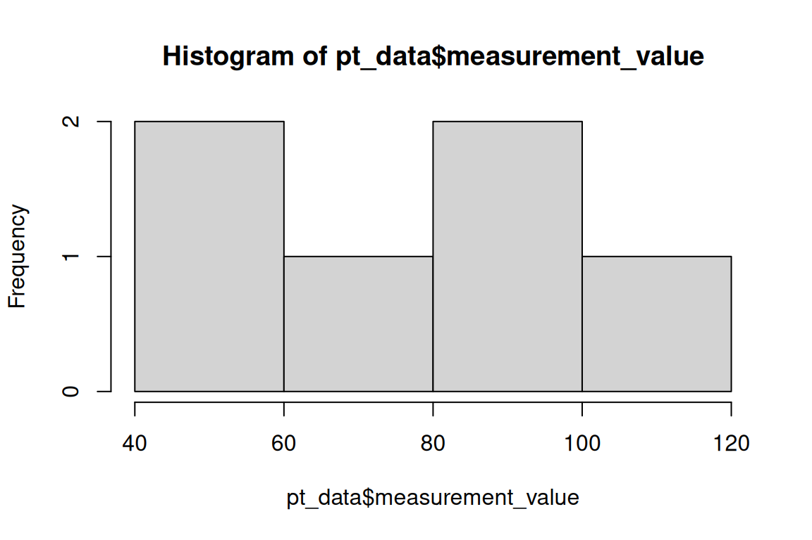
Base R is not super consistent about the plotting API (application programming interface - how you interact with a pieces of software).
The general call for base plot looks something like this:
# this code will not work, it's just an example ("pseudo code")
plot(x = , y = , ...)Additional parameters can be passed in to customize the plot:
- type: scatterplot? lines? etc
- main: a title
- xlab, ylab: x-axis and y-axis labels
- col: color, either a string with the color name or a vector of color names for each point
More layers can be added to the plot with additional calls to lines, points, text, etc.
plot(medal_counts_wide$Year, medal_counts_wide$Gold) # Basic
plot(
medal_counts_wide$Year,
medal_counts_wide$Gold,
#type = "l",
main = "USA Gold Medals",
xlab = "Year",
ylab = "Count"
) # with updated parameters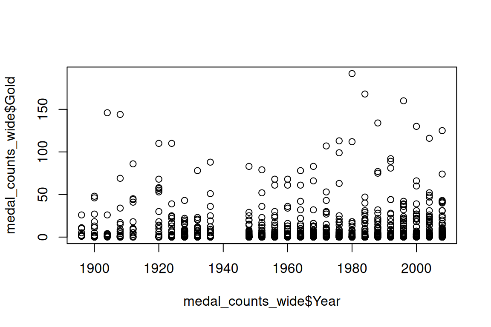
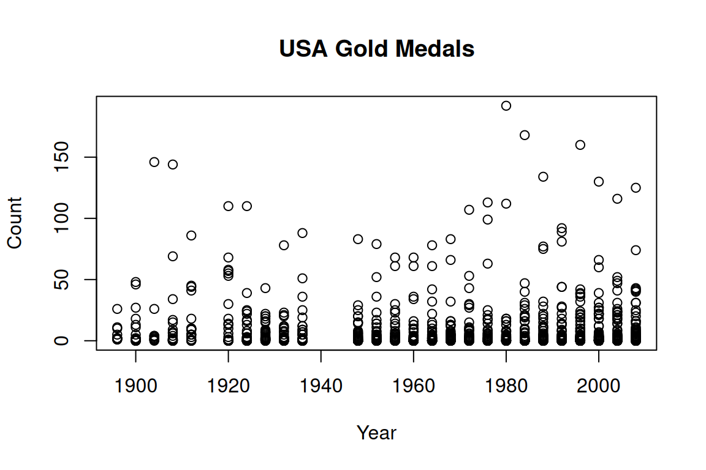
11.5.1 Object-oriented plots
Remember how summary() returns different answers depending on if the column is a factor, a character or a number? Base R can be “smart” about your data type too.
- Base graphics often recognizes the object type and will implement specific plot methods
- lattice and ggplot2 generally don’t exhibit this sort of behavior
medal_counts_wide
#> # A tibble: 1,072 × 5
#> Year NOC Bronze Gold Silver
#> <int> <chr> <dbl> <dbl> <dbl>
#> 1 1896 AUT 2 2 1
#> 2 1896 DEN 3 1 2
#> 3 1896 FRA 2 5 4
#> 4 1896 GBR 2 2 3
#> 5 1896 GER 2 26 5
#> 6 1896 GRE 22 10 20
#> 7 1896 HUN 3 2 1
#> 8 1896 USA 2 11 7
#> 9 1896 ZZX 2 2 2
#> 10 1900 AUS 3 2 0
#> # ℹ 1,062 more rows
summary(medal_counts_wide)
#> Year NOC Bronze Gold
#> Min. :1896 Length :1072 Min. : 0.000 Min. : 0.000
#> 1st Qu.:1952 N.unique : 138 1st Qu.: 1.000 1st Qu.: 0.000
#> Median :1976 N.blank : 0 Median : 2.000 Median : 2.000
#> Mean :1970 Min.nchar: 3 Mean : 9.038 Mean : 9.188
#> 3rd Qu.:1996 Max.nchar: 3 3rd Qu.: 12.000 3rd Qu.: 8.000
#> Max. :2008 Max. :123.000 Max. :192.000
#> Silver
#> Min. : 0.000
#> 1st Qu.: 1.000
#> Median : 2.000
#> Mean : 9.027
#> 3rd Qu.: 10.000
#> Max. :137.000If we provide a multi-column numeric data frame, we get correlation plots
# Calls plotting method for class of the dataset ("data.frame")
medal_counts_wide |>
select(-NOC) |>
plot()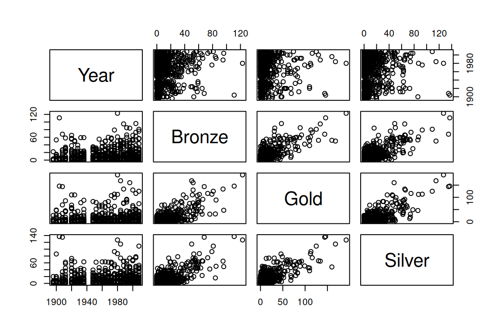
If we provide the output of a linear regression, we get common diagnostic plots.
Let’s see a quick example with a linear model (y = mx + b):
# Calls plotting method for class of medal_lm object ("lm")
# the first argument takes a formula, a new type of object
medal_lm <- lm(Gold ~ Bronze + Silver, data = medal_counts_wide)
summary(medal_lm)
#>
#> Call:
#> lm(formula = Gold ~ Bronze + Silver, data = medal_counts_wide)
#>
#> Residuals:
#> Min 1Q Median 3Q Max
#> -60.256 -3.753 0.336 1.749 103.789
#>
#> Coefficients:
#> Estimate Std. Error t value Pr(>|t|)
#> (Intercept) -1.21556 0.42073 -2.889 0.00394 **
#> Bronze 0.53417 0.03751 14.243 < 2e-16 ***
#> Silver 0.61770 0.03435 17.981 < 2e-16 ***
#> ---
#> Signif. codes: 0 '***' 0.001 '**' 0.01 '*' 0.05 '.' 0.1 ' ' 1
#>
#> Residual standard error: 11.7 on 1069 degrees of freedom
#> Multiple R-squared: 0.6782, Adjusted R-squared: 0.6776
#> F-statistic: 1126 on 2 and 1069 DF, p-value: < 2.2e-16
summary(medal_counts_wide)
#> Year NOC Bronze Gold
#> Min. :1896 Length :1072 Min. : 0.000 Min. : 0.000
#> 1st Qu.:1952 N.unique : 138 1st Qu.: 1.000 1st Qu.: 0.000
#> Median :1976 N.blank : 0 Median : 2.000 Median : 2.000
#> Mean :1970 Min.nchar: 3 Mean : 9.038 Mean : 9.188
#> 3rd Qu.:1996 Max.nchar: 3 3rd Qu.: 12.000 3rd Qu.: 8.000
#> Max. :2008 Max. :123.000 Max. :192.000
#> Silver
#> Min. : 0.000
#> 1st Qu.: 1.000
#> Median : 2.000
#> Mean : 9.027
#> 3rd Qu.: 10.000
#> Max. :137.000How would you interpret this statistical result?
Is this a reasonable model? Let’s check some diagnostics.
# print first five plots only
plot(medal_lm, which=1:5)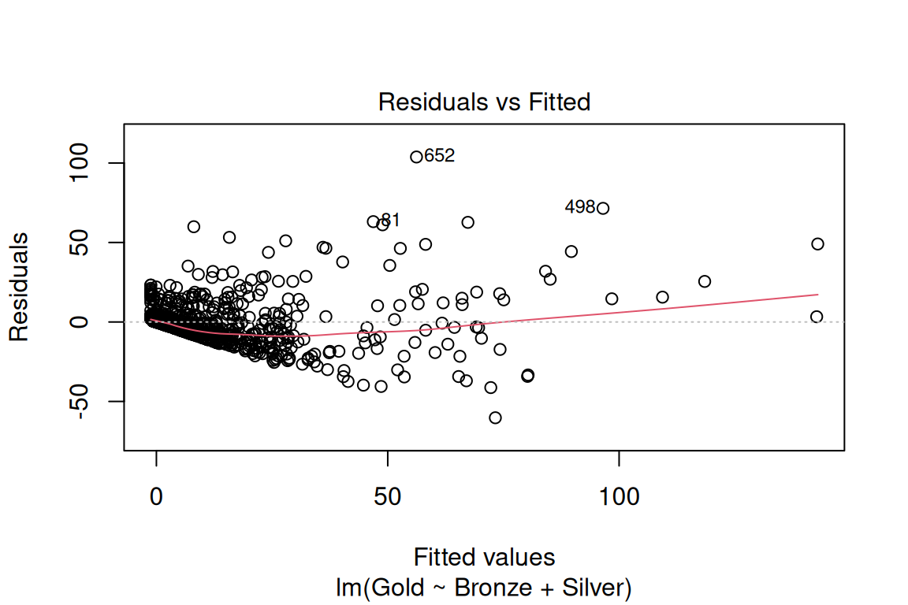
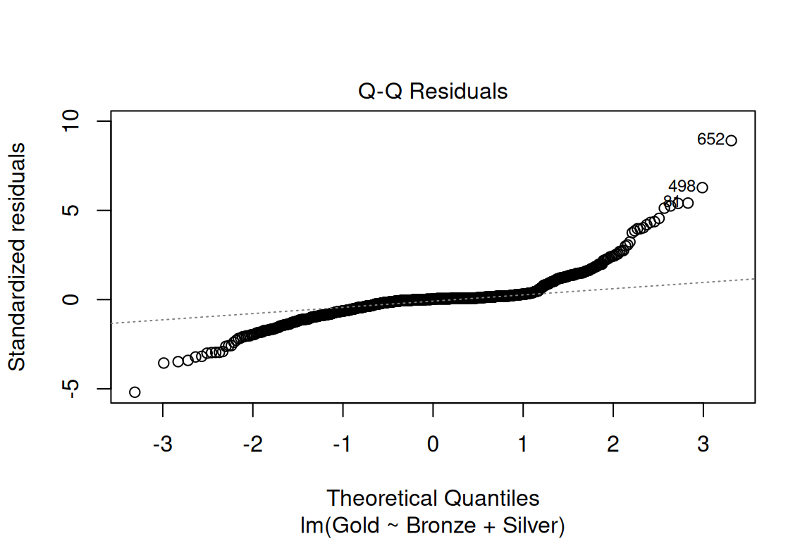
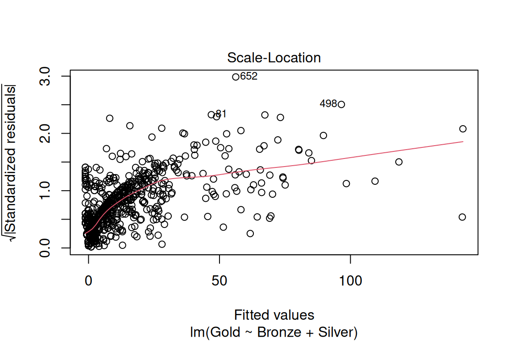
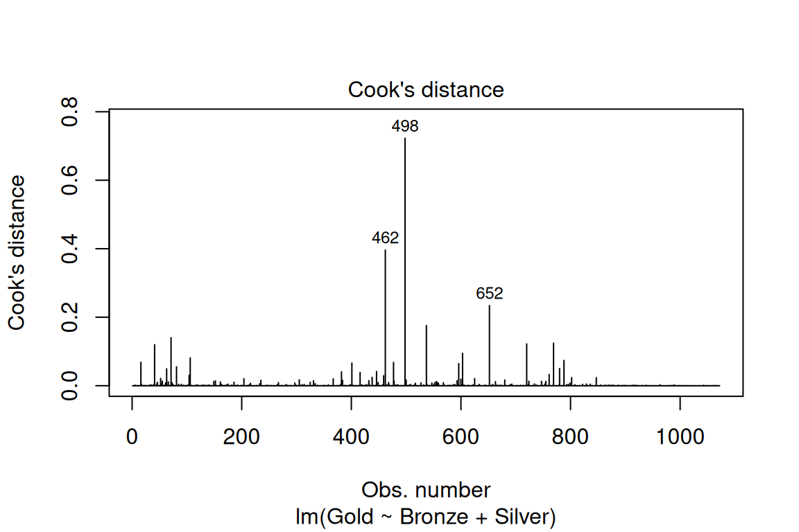
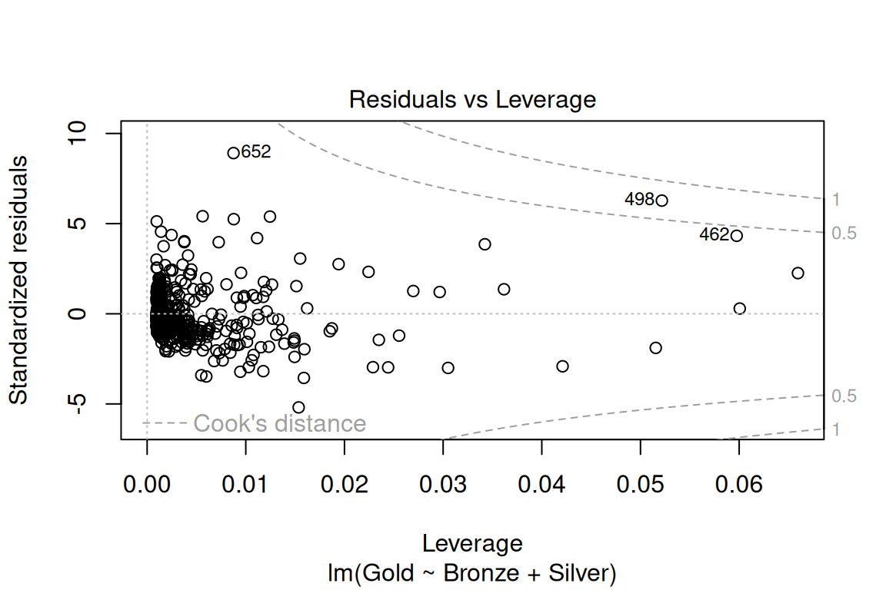
Can you tell R was made by statisticians?
11.5.2 Other plot types in base graphics
These are a few other types of plots you can make in base graphics.
boxplot(Gold ~ Year, data = medal_counts_wide)
hist(medal_counts_wide$Gold)
plot(density(medal_counts_wide$Gold))
barplot(
usa_gold_medals$count,
width = 4,
names.arg = usa_gold_medals$Year,
main = "USA Gold Medals"
)
mosaicplot(Year~Medal, medal_counts)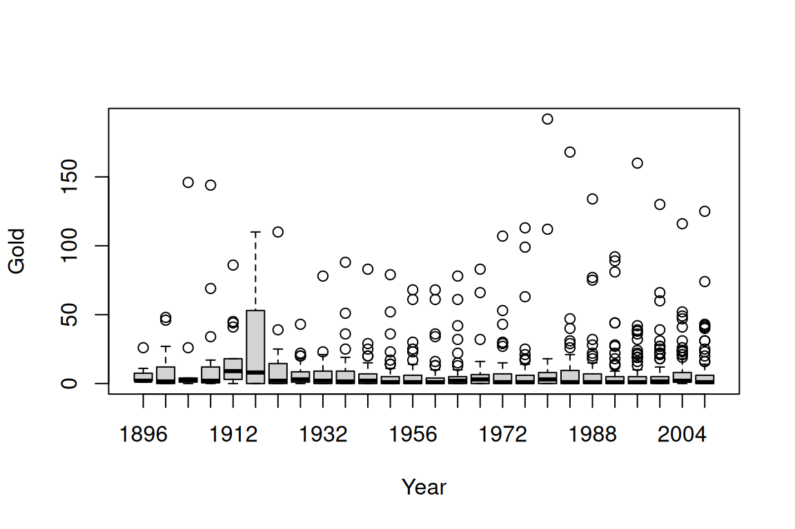
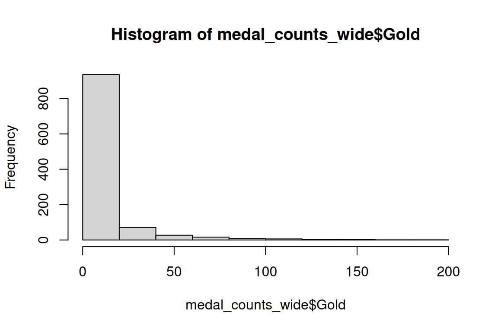
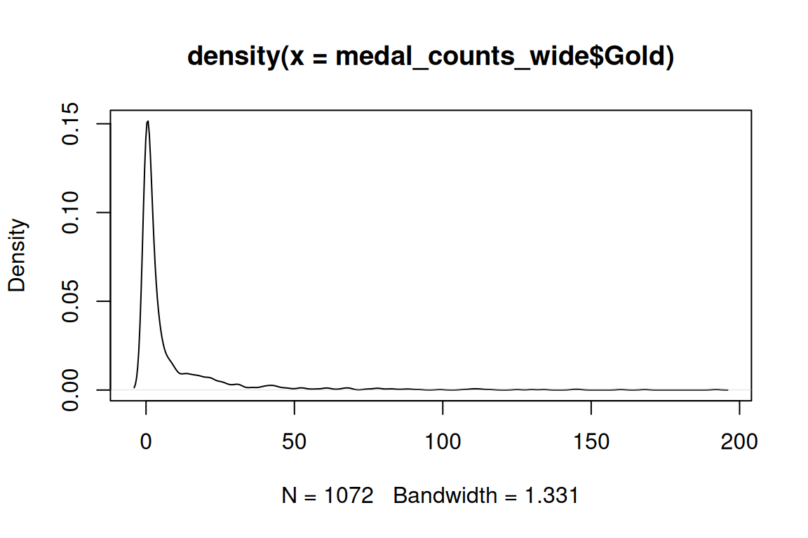
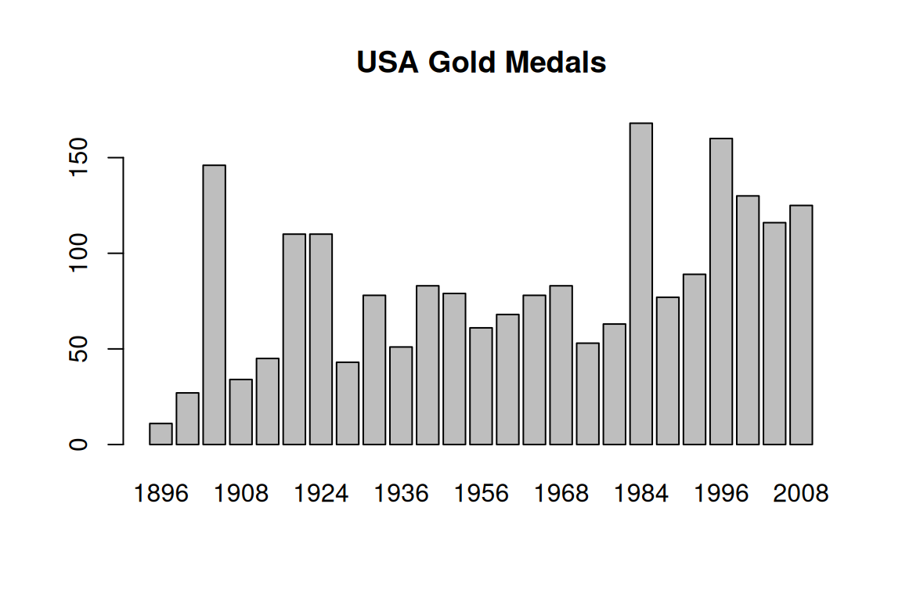
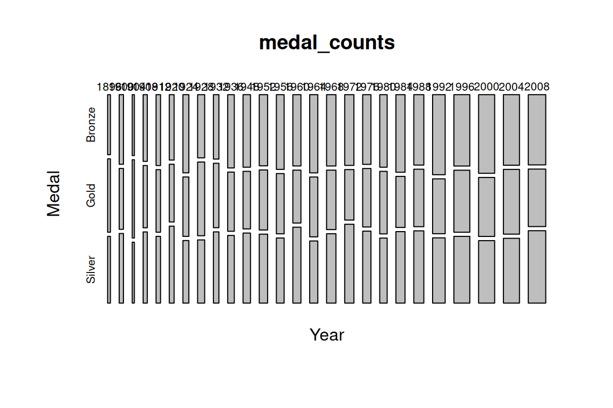
11.6 Breakout Problems
- Using the airquality dataset, plot a histogram of temperature.
- Using the ToothGrowth dataset, plot a box plot of tooth length by dose and supplement. (Hint! You can use the “formula” argument to combine multiple variables)